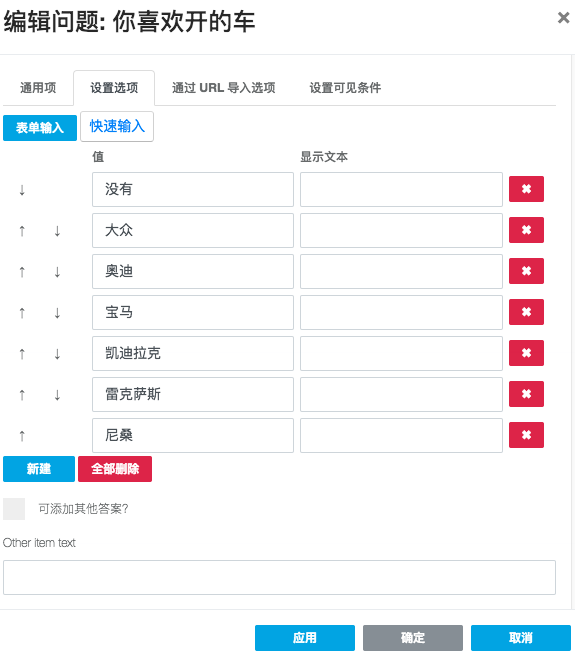
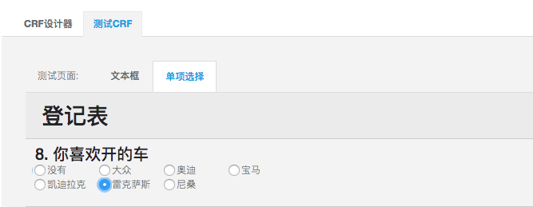

派兰数据
简介
快速入门
CRF设计
全局设置
页面设置
问题类型
工具箱
通用设置
文本框
单项选择
下拉框
多项选择
布尔值
评分
多行文本框
日期
矩阵
地址
文本框组
文件
HTML
高级用法
预览
研究项目
项目概览
患者病例
项目成员
项目中心
随访计划
患者登记
随访管理
本书使用 GitBook 发布
单项选择
单项选择
当问题的答案是几个选项中的一个的时候，我们就可以选择单项选择这类问题。
然后我们要设置选项

还可以设置选项的列数

results matching "
"
No results matching "
"